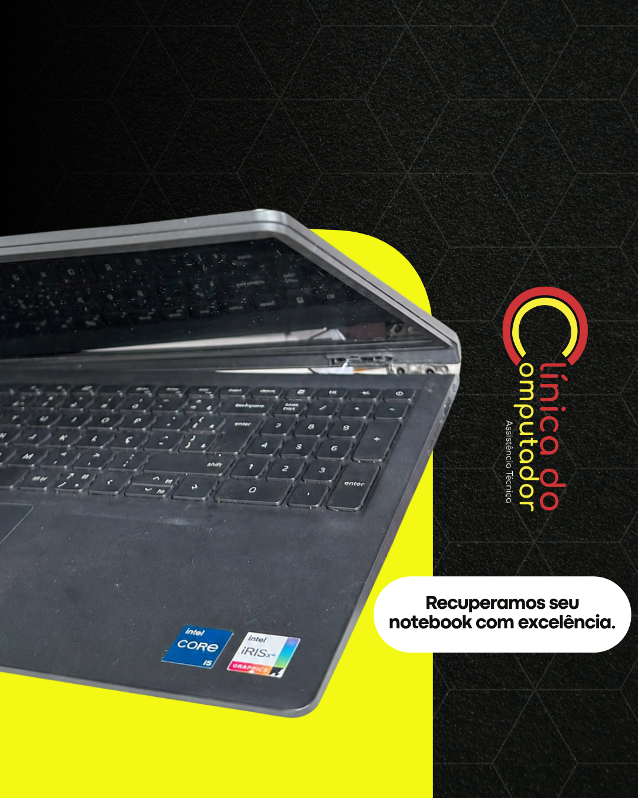
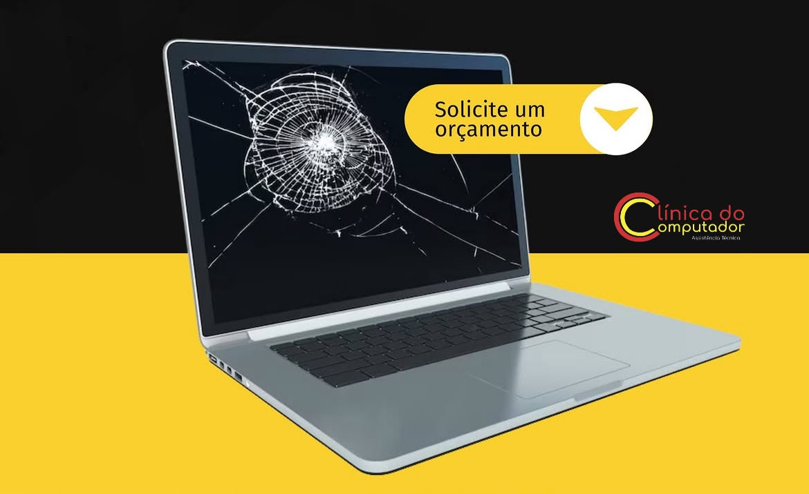
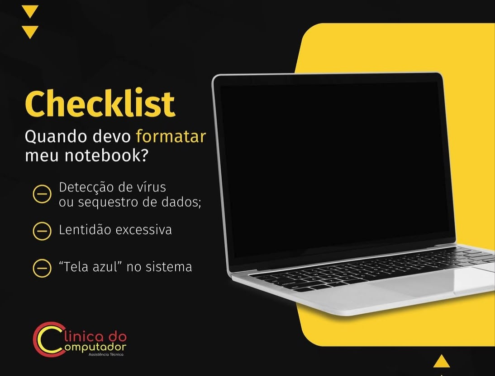

Clínica do Computador: mais de 15 anos de experiência em assistência técnica.
Manutenção e reparos para computadores e notebooks com atendimento especializado.
Quero fazer um orçamentoSoluções para computadores e notebooks
01 — PC Gamer
Montagem do zero, limpeza profunda e relatório técnico.
Saiba mais
Atendimento especializado para máquinas de alto desempenho. Oferecemos montagem personalizada, otimização de fluxo de ar, organização de cabos, troca de pasta térmica de alta condutividade e relatório técnico.

02 — Reparo em Carcaça
Reparo de carcaças de notebooks quebradas com precisão técnica.
Saiba mais
Diagnóstico preciso e recuperação de carcaças quebradas com falhas estruturais. Realizamos uma análise minuciosa do equipamento para reparar com segurança, evitando custos desnecessários com a troca completa da peça.
03 — Reparo Placa Mãe
Diagnóstico e reparo em placas-mãe de notebook.
Saiba mais
Identificação e correção de problemas em placas-mãe, incluindo falhas de energia, superaquecimento e defeitos em circuitos. Utilizamos equipamentos avançados para seu notebook voltar a funcionar como novo.

04 — Substituição de Tela
Troca de telas trincadas, manchadas ou com defeito.
Saiba mais
Substituição rápida de telas danificadas por peças de alta qualidade e total compatibilidade com seu modelo de notebook com garantia inclusa. Solução ideal para telas trincadas, com manchas, listras ou sem imagem.
05 — Substituição de Peças
Troca de teclados e outros componentes.
Saiba mais
Substituição de teclados travados ou defeituosos, troca de DC Jack, coolers, alto-falantes e diversas outras peças. Utilizamos componentes de alta qualidade para restaurar o perfeito funcionamento da sua máquina.
06 — Upgrade e Desempenho
Deixe seu computador até 10x mais rápido com SSD e memória RAM.
Saiba mais
Aumente a velocidade e a capacidade multitarefa do seu equipamento. Avaliamos a arquitetura do sistema para indicar a melhor combinação de SSD e memória RAM, garantindo desempenho e fluidez nas tarefas.

07 — Sistemas e Segurança
Formatação, programas e recuperação de dados.
Saiba mais
Soluções completas em software: formatação com otimização do sistema, eliminação de malwares, instalação de programas essenciais, rotinas de backup e recuperação de arquivos deletados ou em HDs com falhas.
08 — Contratos Empresariais
Manutenção preventiva, contratos corporativos e suporte contínuo.
Saiba mais
Gestão e manutenção da infraestrutura de TI da sua empresa. Garantimos suporte técnico ágil, preventivo e corretivo para que a sua equipe não perca tempo nem produtividade por conta de falhas em computadores.
Conectando tecnologia e eficiência em Salvador e Lauro de Freitas
Um equipamento parado significa tempo perdido, prazos apertados e estresse desnecessário. Por isso, trabalhamos com diagnóstico preciso e processo ágil, devolvendo produtividade ao seu negócio e tranquilidade à sua rotina.
Fundação
Anos de Atuação
Clientes Atendidos
Atendimentos Realizados
O que nossos clientes dizem
Letícia Fróes
"Atendimento maravilhoso me esclareceram tudo e foram muito atenciosos, fora que o serviço ficou perfeito meu notebook ficou em perfeito estado, se fosse pra recomendar um serviço realmente bom com certeza recomendaria esse."
Rodolfo Monteiro
"Quero agradecer o pessoal da clínica do computador pelo ótimo atendimento! Levei meu computador achando que ia demorar dias pra resolver, mas o serviço foi super rápido e bem feito!!!"
Valney Carneiro
"Muito satisfeito! O Caio foi assertivo e rápido na solução do problema em meu notebook, o que foi um diferencial para mim que trabalho em homeoffice. A equipe de atendimento foi muito gentil desde o contato inicial por telefone. Ganhou a minha preferência. Parabéns!"
Paulo Roberto
"Excelente, profissionais de alta competência e agilidade incrível. Cheguei com um notebook de alta performance da Avell com a carcaça quebrada e esses profissionais me entregaram com 24 hs o equipamento perfeito, 100% satisfeito, não esperava que o serviço ficasse tão perfeito, nota 10!"
Vinicius Ferreira
"Levei meu notebook crente que teria que trocar uma peça, chegando lá, foram SUPER HONESTOS e me informaram q era apenas um problema de Driver e resolveram em menos de 15 min. Recomendo demais, nota mil!"
Rafael Guerra
"Ótimos profissionais, atendimento rápido e confiável!! Minha assistência de confiança a partir de agora!! Computador funcionando perfeitamente após a troca de tela!"
Joaquim Reis
"Sou cliente da Clínica do Computador há anos. E desde que iniciei minha relação com a clínica, jamais pensei em mudar. São profissionais sérios e comprometidos com o que fazem. Estou satisfeito."
Laina L
"Excelente!!! Eu trabalho com meu computador, então precisaria de um serviço que fosse cumprido dentro do prazo que me foi passado, e assim eles fizeram. Foram ágeis e honestos!!! Recomendo muito."
Precisa de assistência?
Entre em contato com a unidade mais perto de você e fale com nossa equipe.